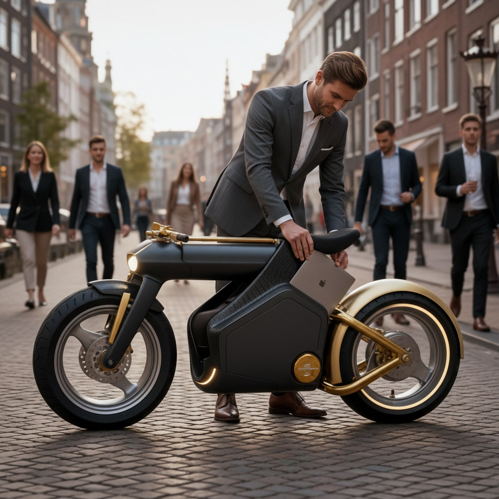

Verge Next Drivetrain
Integration of the patented Verge 'Donut' motor. A visually weightless rear wheel that delivers silent, instantaneous torque for the flagship JozEV experience.

Executive Charging Bay
Business doesn't stop. Our weather-sealed, vibration-dampened compartment features 100W USB-C PD to keep your 16" laptop at 100% while you glide through the city.

Modular Refinement
Available in two tiers. Choose between the boundary-pushing Verge Hubless drive or our Signature high-efficiency core motor. Same luxury, two speeds of life.